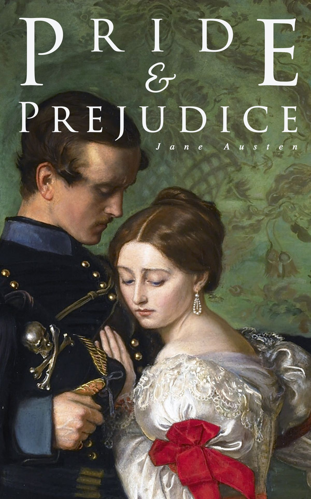

The Kite Runner

Khaled Hosseni
The unforgettable, heartbreaking story of the unlikely friendship between a wealthy boy and the son of his
father’s servant, The Kite Runner is a beautifully crafted novel set in a country that is in the process of
being destroyed.
The God of Small Things

Arundhathi Roy
The God of Small Things is a family drama novel written by Indian writer Arundhati Roy. It's Roy's debut
novel.
It is a story about the childhood experiences of fraternal twins whose lives are destroyed by the "Love
Laws"
that lay down "who should be loved, and how. And how much."
The Alchemist

Paulo Coelho
Paulo Coelho's enchanting novel has inspired a devoted following around the world. This story, dazzling in
its
powerful simplicity and inspiring wisdom, is about an Andalusian shepherd boy named Santiago who travels
from
his homeland in Spain to the Egyptian desert in search of a treasure buried in the Pyramids.
Angels and Demons

Dan Brown
When Harvard symbologist Robert Langdon discovers the resurgence of an ancient brotherhood known as the
Illuminati, he flies to Rome to warn the Vatican, the Illuminati's most hated enemy. Joining forces with
beautiful Italian scientist Vittoria Vetra (Ayelet Zurer), Langdon follows a centuries-old trail of ancient
symbols in the hope of preventing the Illuminati's deadly plot against the Roman Catholic Church from coming
to
fruition.
Pride and Prejudice

Jane Austen
The novel opens with one of the most famous lines in English literature: “It is a truth universally
acknowledged, that a single man in possession of a good fortune, must be in want of a wife.” The statement
is seemingly what Mrs. Bennet thinks as she sets her sights on the newly arrived Bingley, who she is sure
will make a suitable husband for one of her daughters.
The Lord of the Rings

J. R. R. Tolkien
In ancient times the Rings of Power were crafted by the Elven-smiths, and Sauron, the Dark Lord, forged the
One Ring, filling it with his own power so that he could rule all others. But the One Ring was taken from
him, and though he sought it throughout Middle-earth, it remained lost to him. After many ages it fell by
chance into the hands of the hobbit Bilbo Baggins.
The Great Gatsby

F. Scott Fitzgerald
The uniquely imaginative Baz Luhrmann (Moulin Rouge!, Australia) tackles F. Scott Fitzgerald's landmark
novel, The Great Gatsby, with blockbuster star Leonardo DiCaprio in the title role. Spider-Man's Tobey
Maguire stars as the Fitzgerald-like would-be writer Nick Carraway who arrives in New York in 1922, an era
of loose morals, glittering jazz and bootleg kings. Chasing his own American Dream, Nick encounters the
mysterious millionaire Gatsby and his bewitching cousin Daisy.
Jane Eyre

Novel by Charlotte Bronte
Orphaned as a child, Jane has felt an outcast her whole young life. Her courage is tested once again when she
arrives at Thornfield Hall, where she has been hired by the brooding, proud Edward Rochester to care for his
ward Adèle. Jane finds herself drawn to his troubled yet kind spirit. She falls in love. Hard.